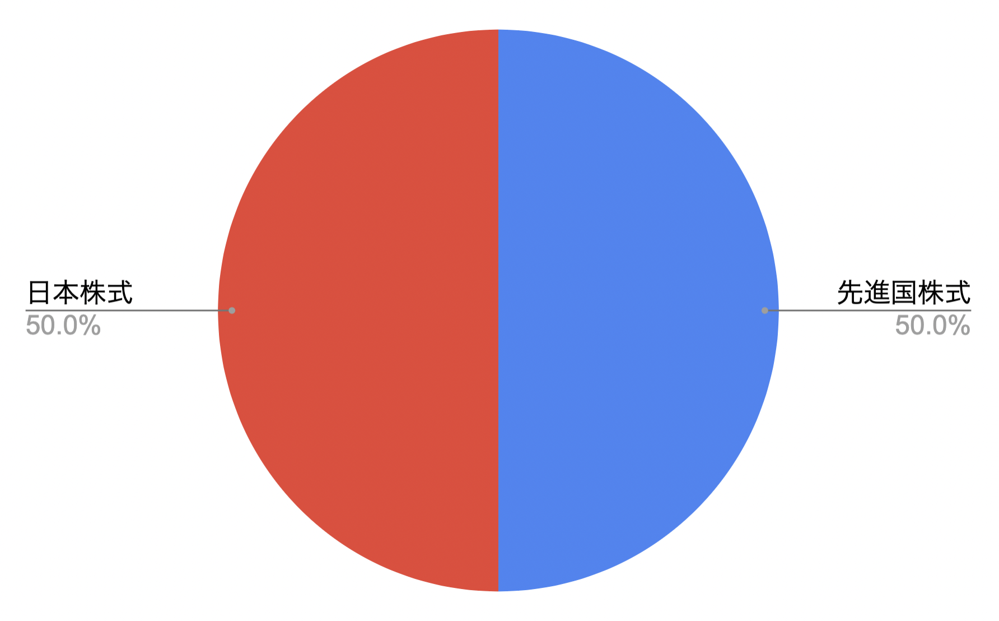
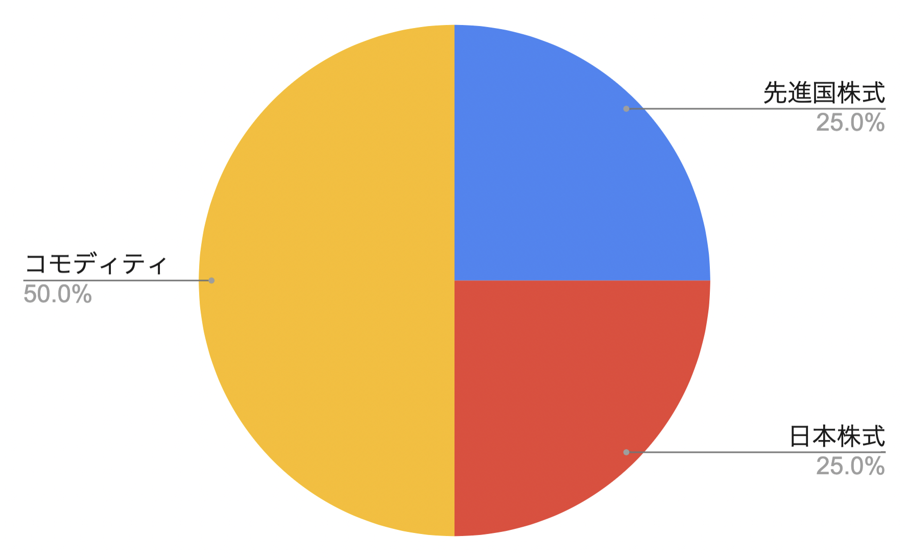
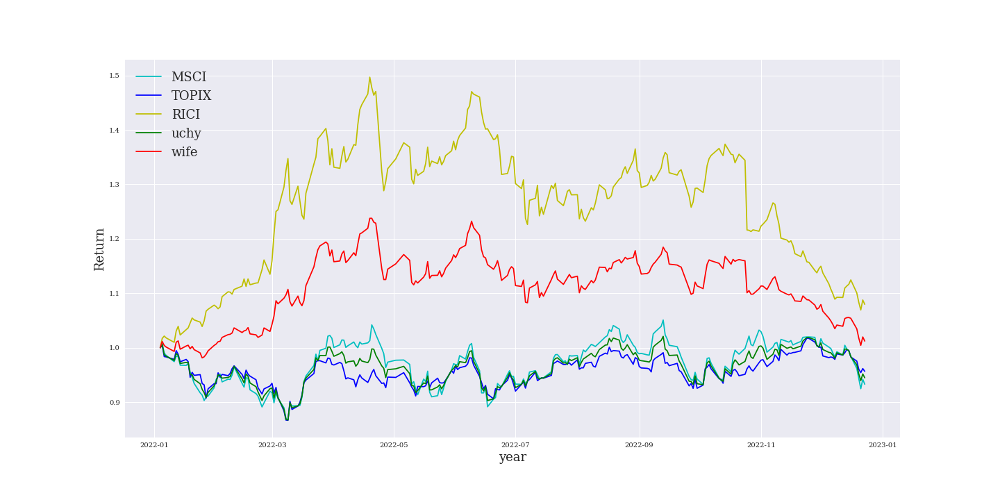

2023年iDeCoのベストな投資先は【コモディティ】Pythonで投資分析した話
2022-12-24 by 内田裕之
- 「iDeCoの投資先はどこがいいの？」
- 「効率よくお金を増やしたい！」
この記事はそんな方へ向けて書いています。
こんにちは。
iDeCoで老後資産づくりに励むうっちゃんです。
iDeCoを始めたけど、投資先をどうしたらいいか悩んでいませんか？
実は2023年はコモディティに注目が集まっているのです。
この記事では2023年のiDeCoのベストな投資先を紹介します。
老後資産づくりに役立つと嬉しいです。
■目次
iDeCoとは？
iDeCoとは個人型確定拠出年金です。
会社に依存せずに個人で老後資産を作れる制度として注目を集めています。
iDeCoができた背景
従来は確定給付型年金（DB年金）が一般的でした。
これは企業がお金を積み立て、企業が運用して従業員の退職金を作る制度です。
終身雇用を前提として、退職金の規定などで「勤続○年で退職金は○○○万円お支払いします」と決められていました。
一見すると良い制度に見えますが、重大な欠点があります。
それは万が一退職金が運用予定より少ない場合、企業が追加でお金を出す必要があることです。
これが仇となり、超低金利時代の今、制度の維持が難しくなってきました。
運用の中心は安全資産である10年国債ですが、近年の利回りが著しく下がっているのがわかります。
（参考：10年国債の利回り）
目標の利回りで運用できず積立金が不足した結果、企業が追加でお金を出す状況に陥りました。
つまり会社にとって従業員の退職金コストが非常に負担が大きくなったのです。
また、従業員にとってもDB年金には欠点がありました。
それは退職金の金額が勤続年数によって決まるという点です。
転職した場合、勤続年数が少なくなるため退職金が減るリスクがありました。
終身雇用が崩れた今、従業員にとっても不利な制度になってしまったのです。
さらに公的年金も少子高齢化の影響で不安が大きくなっています。
支給開始年齢が引き上げられたり支給額が減少したり。。
老後2000万円問題で話題になったように、金だけで生活するのは難しいと思われます。
（参考：老後2000万円問題）
このような時代背景の中、2001年に確定拠出年金が誕生しました。
iDeCoの正しい使い方
確定拠出年金は企業、もしくは自分がお金を出して、自分で運用して老後資産を作る制度です。
企業は毎月拠出するお金だけ負担すれば良いので退職金コストが軽減されます。
退職金が少ないと言っても、企業は追加でお金を出す必要がありません。
確定拠出年金には2種類あり、拠出する者が誰かで異なります。
拠出者が企業の場合、企業型確定拠出年金（DC年金）と呼ばれます。
一方で個人が拠出する場合、個人型確定拠出年金（iDeCo）と呼ばれます。
メリットやデメリットはこちらのサイトをご覧ください。
（参考：iDeCo公式サイト）
iDeCoでどのぐらいの資産が築けるのか？
年金終価係数を使ってシミュレーションしてみます。
（参考：年金終価係数）
年金終価係数を使うと、毎年○万円を利率○%で○年積み立てると最終的にいくらになるかが分かります。
iDeCoの最低拠出額は月5,000円、株式投資信託の平均利回りは4%、積立期間は40年とします。
計算の結果、40年後の資産は570万円（積立額240万円、リターン+138%）
少ないようにも見えますが、つみたてNISAや預貯金なども合わせればそれなりの資産は作れるのではないでしょうか。
また、夫婦それぞれで資産形成をすれば豊かな老後生活を期待できるでしょう。
私の投資配分
私はiDeCoで先進国株式50%と日本株式50%にしています。
20代なのでリスクを最大限に取るために株式100%です。
投資先は確定拠出年金の教科書（山崎元著）を参考にしました。

確定拠出年金の教科書
また、妻はDC年金で先進国株式25%と日本株式25%に加え、コモディティ50%に投資しています。
コモディティは歴史的な割安水準にあるので積極的に配分しています。
ちなみに運営機関はSBI証券を使っています。
手数料の安さと運用商品の良さ、システムの使いやすさから選定しました。
（参考：SBI証券のiDeCo）
iDeCoの投資先

iDeCoはあくまで制度であり、大事なのは運用商品です。
定期預金、保険、投資信託（インデックス、アクティブ）、バランス型と多数ありますが、50代まではインデックス型の株式投資信託のみでも問題ないと考えています。
ここでは私がおすすめする投資信託を紹介します。
先進国の株式
先進国の株式に幅広く投資できるのがＤＩＡＭ外国株式インデックスファンドです。

（参考：ＤＩＡＭ外国株式インデックスファンド ＜ＤＣ年金＞）
MSCIコクサイ・インデックスをベンチマークとしています。
S&P500をよく聞くかもしれませんが、米国に限られてしまいます。
より幅広い先進国に投資できるのがMSCIコクサイ・インデックスです。
詳細は上記リンクから交付目論見書をご覧ください。
日本の株式
日本の株式に幅広く投資できるのが日本株式インデックス・オープンSです。
（参考：DC日本株式インデックス・オープンS）
TOPIXをベンチマークとしています。
日経平均はN225と呼ばれるように225銘柄しか投資されていないので、幅広く投資する観点からTOPIXをおすすめします。
詳細は上記リンクから交付目論見書をご覧ください。
コモディティ
コモディティは商品先物です。
商品先物市場で取引されている原油やガソリンなどのエネルギー、金やプラチナなどの貴金属、トウモロコシや大豆などの穀物といったような商品に投資します。
（参考：ダイワRICIコモディティ・ファンド）
ベンチマークはロジャーズ国際コモディティ指数（RICI）です。
エネルギー40%、穀物20%、産業金属14%などの構成になっています。
詳細は上記リンクから交付目論見書をご覧ください。
投資分析
ここからは2023年の投資先としてベストな配分を考えていきます。
投資の分析はテクニカルとファンダメンタルズに分かれます。
プール水泳に例えるなら、流れるプールの流れる方向がファンダメンタルズであり、泳ぎ方がテクニカルとも言えます。
テクニカル分析
まず2022年のファンドの動きを分析します。
水色：先進国株式、青色：日本株式、黄色：コモディティ、緑色：私のiDeCoの成績、赤色：妻のiDeCoの成績です。
2022年はコモディティが大きく上昇しましたが、後半から下落しました。
株式は冴えない1年でしたね。
さて、2023年はどうなるのか？
分析のために先進国の株価をコモディティ指数で割った指数を作成します。

指数が上昇すれば株式が優位、下落すればコモディティが優位であることを意味します。
2008年から2020年まで一貫して指数が上昇しており、株式が優位だったことが分かります。
しかし、2021年から指数は横ばいになり、2022年は下落しました。
つまり2022年は株式よりコモディティが優位な1年でした。
さらに移動平均線を追加すると200日移動平均線が下落トレンドになっていることが分かります。
指数が2021年の最高値を下回る場合、さらなる下落につながる可能性があります。
2023年はコモディティが最良の投資先になる可能性を秘めているといえます。
ファンダメンタルズ分析
ブルームバーグで2023年はコモディティが最良の投資先になると記事が出ていました。
（参考：ゴールドマン、商品が2023年の最良の資産クラス－リターン43％見込む）
原油や天然ガス、金属などの原材料の不足が最終的に価格を押し上げるとの見通しを示しています。
また、20年後半から複数年にわたる商品の「スーパーサイクル」を予想されています。
一方で株価も2023年中盤から上昇が予想されています。
（参考：2023年の米国株見通し）
米国の利上げが終わること、その後に利下げが期待されていることが上昇要因となっています。
ただ、2022年12月時点から最大でも+17%程度しか見込まれていません。
効率よく資産を増やすにはコモディティの比重を増やす戦略を推奨します。
投資配分としては妻の配分と同じものがおすすめです。
先進国株式25%と日本株式25%に加え、コモディティ50%です。
まとめ
今回はiDeCoの2023年に最適な投資先を紹介しました。
- 2023年はコモディティが最良の資産クラス
- テクニカル的にもコモディティは割安
この記事が面白いと思ったらTwitterやブログで紹介していただけますと嬉しいです。